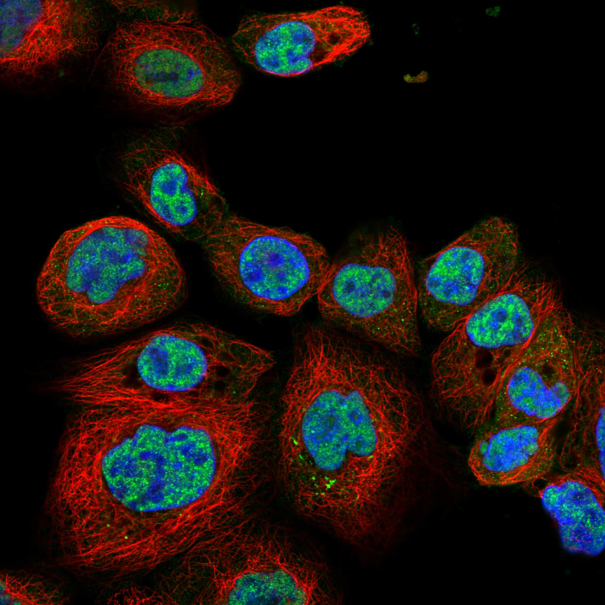
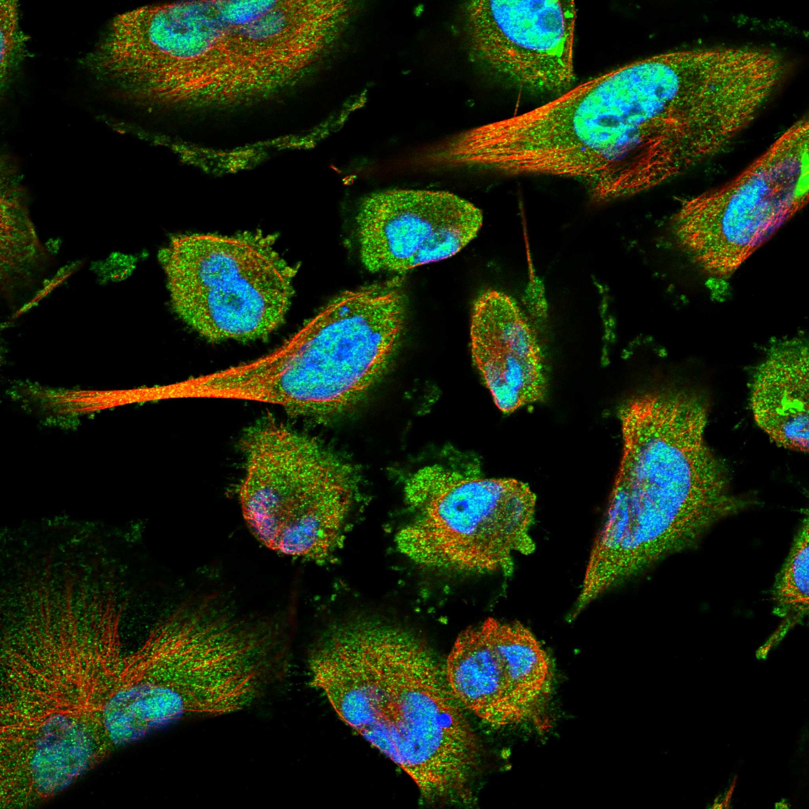
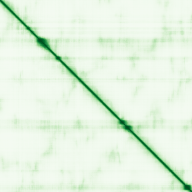

type: protein-evaluation gene: "ETAA1" date: 2026-06-03 tags: [protein-scout, nuclear-protein, evaluation] status: scored ---
ETAA1 核蛋白评估报告 (Full Re-evaluation)
1. 基本信息
| 项目 | 内容 |
|---|---|
| 基因名 / 别名 | ETAA1 / ETAA16 |
| 蛋白名称 | Ewing's tumor-associated antigen 1 |
| 蛋白大小 | 926 aa / 103.4 kDa |
| UniProt ID | Q9NY74 |
| 评估日期 | 2026-06-03 |
IF 图像:  
2. 评分总览
| 维度 | 得分 | 满分 | 加权后 | 关键证据摘要 |
|---|---|---|---|---|
| 核定位特异性 | 7/10 | ×4 | 28 | HPA: Nucleoplasm; 额外: Nuclear speckles, Vesicles, Plasma membrane; UniProt: Nucleus |
| 蛋白大小 | 8/10 | ×1 | 8 | 926 aa / 103.4 kDa |
| 研究新颖性 | 8/10 | ×5 | 40 | PubMed strict=31 篇 (≤40→8) |
| 三维结构 | 6/10 | ×3 | 18 | AlphaFold v6 pLDDT=49.3; PDB: 8JZV |
| 调控结构域 | 7/10 | ×2 | 14 | InterPro: IPR029406; Pfam: PF15350 |
| PPI 网络 | 3/10 | ×3 | 9 | STRING 15 partners; IntAct 9 interactions |
| 互证加分 | — | max +3 | 1.5 | PDB+AF+STRING+IntAct cross-validation |
| 原始总分 | 118.5/180 | |||
| 归一化总分 | 65.8/100 |
3. 详细分析
3.1 核定位证据
| 来源 | 定位 | 可信度 |
|---|---|---|
| Protein Atlas (IF) | Nucleoplasm; 额外: Nuclear speckles, Vesicles, Plasma membrane, Cytosol | Supported |
| UniProt | Nucleus | Swiss-Prot/TrEMBL |
IF 图像获取: IF图像已下载并嵌入 (2张)
GO Cellular Component:
- cytosol (GO:0005829)
- nuclear replication fork (GO:0043596)
- nuclear speck (GO:0016607)
- nucleoplasm (GO:0005654)
- plasma membrane (GO:0005886)
结论: 主要核定位，HPA 可靠性良好，有辅助数据源支持。
3.2 蛋白大小评估
评价: 大小基本合适，可用于常规实验。
3.3 研究现状
| 指标 | 数值 |
|---|---|
| PubMed strict count | 31 |
| PubMed broad count | 50 |
| 别名(未计入scoring) | Aliases observed but not used for scoring: ETAA16 |
关键文献: 1. Genetic links between ovarian ageing, cancer risk and de novo mutation rates.. *Nature*. PMID: 39261734 2. Inflammasome protein scaffolds the DNA damage complex during tumor development.. *Nature immunology*. PMID: 39402152 3. ATR activation is regulated by dimerization of ATR activating proteins.. *The Journal of biological chemistry*. PMID: 33636182 4. Common motifs in ETAA1 and TOPBP1 required for ATR kinase activation.. *The Journal of biological chemistry*. PMID: 30940728 5. Genetic polymorphisms within the ETAA1 gene associated with growth traits in Chinese sheep breeds.. *Animal genetics*. PMID: 35352359
评价: 非常新颖，仅有少数基础研究。
3.4 三维结构分析
| 指标 | 数值 |
|---|---|
| AlphaFold 版本 | v6 |
| AlphaFold 平均 pLDDT | 49.3 |
| 高置信度残基 (pLDDT>90) 占比 | 4.2% |
| 置信残基 (pLDDT 70-90) 占比 | 9.8% |
| 中等置信 (pLDDT 50-70) 占比 | 16.1% |
| 低置信 (pLDDT<50) 占比 | 69.9% |
| 有序区域 (pLDDT>70) 占比 | 14.0% |
| 可用 PDB 条目 | 8JZV |
PAE (Predicted Aligned Error): 
评价: AlphaFold 预测质量有限（pLDDT=49.3），有序残基占 14.0%。
3.5 结构域分析
| 来源 | 结构域 |
|---|---|
| InterPro/Pfam | InterPro: IPR029406; Pfam: PF15350 |
染色质调控潜力分析: 存在已知结构域注释，可作为功能研究的结构基础。
3.6 PPI 网络
STRING 预测互作 (combined score >0.4):
| Partner | Combined Score | Experimental | 功能类别 |
|---|---|---|---|
| ATRIP | 0.913 | 0.510 | — |
| RPA2 | 0.862 | 0.624 | — |
| TOPBP1 | 0.834 | 0.000 | — |
| RPA1 | 0.770 | 0.605 | — |
| ATR | 0.747 | 0.510 | — |
| BRCA1 | 0.735 | 0.615 | — |
| SMARCAL1 | 0.691 | 0.071 | — |
| WDR92 | 0.660 | 0.000 | — |
| STN1 | 0.627 | 0.000 | — |
| RAD9A | 0.621 | 0.000 | — |
实验验证互作 (IntAct):
| Partner | 方法 | PMID | ||
|---|---|---|---|---|
| M | psi-mi:"MI:0007"(anti tag coimmunoprecipitation) | imex:IM-27674 | pubmed:33208464 | |
| PB1 | psi-mi:"MI:0007"(anti tag coimmunoprecipitation) | pubmed:28169297 | imex:IM-25584 | |
| PB2 | psi-mi:"MI:0007"(anti tag coimmunoprecipitation) | pubmed:28169297 | imex:IM-25584 | |
| SUPT16H | psi-mi:"MI:0007"(anti tag coimmunoprecipitation) | pubmed:26496610 | imex:IM-24272 | |
| ZBTB48 | psi-mi:"MI:0007"(anti tag coimmunoprecipitation) | pubmed:26496610 | imex:IM-24272 | |
| TARS3 | psi-mi:"MI:0007"(anti tag coimmunoprecipitation) | pubmed:26496610 | imex:IM-24272 | |
| H4C16 | psi-mi:"MI:0007"(anti tag coimmunoprecipitation) | pubmed:26496610 | imex:IM-24272 | |
| CFAP184 | psi-mi:"MI:0007"(anti tag coimmunoprecipitation) | pubmed:33961781 | imex:IM-29278 | |
| GABARAPL1 | psi-mi:"MI:1314"(proximity-dependent biotin identi | pubmed:34524948 | imex:IM-30012 |
PPI 互证分析:
- STRING + IntAct 均有数据
- STRING partners: 15，IntAct interactions: 9
- 调控相关比例: 0 / 15 = 0%
评价: STRING 15 个预测互作，IntAct 9 个实验互作。调控相关配体占比 0%。
3.7 多库互证
| 维度 | 来源 | 结果 | 是否一致 |
|---|---|---|---|
| 三维结构 | AlphaFold pLDDT=49.3 + PDB: 8JZV | pLDDT=49.3, v6 | 预测+实验 |
| 定位 | UniProt + HPA | Nucleus / Nucleoplasm; 额外: Nuclear speckles, Vesicles, Plasm | 一致 |
| PPI | STRING + IntAct | 15 + 9 interactions | 数据充分 |
互证加分明细:
- PDB + AlphaFold 双源验证: +0.5
- 多库定位一致 (3源): +0.5
- STRING + IntAct 双源验证: +0.5
- 结构域 + AlphaFold 质量: +0
- PDB 多条目覆盖: +0
总分: +1.5 / max +3
4. 总体评价
推荐等级: ⭐⭐⭐
核心优势: 1. ETAA1 — Ewing's tumor-associated antigen 1，非常新颖，仅有少数基础研究。 2. 蛋白大小926 aa，大小基本合适，可用于常规实验。
风险/不确定性: 1. PubMed 31 篇，已有一定研究基础 2. AlphaFold 预测质量一般（pLDDT=49.3），需要更多实验结构验证
下一步建议:
- [ ] 查阅最新关键文献补充研究背景
- [ ] 获取 Protein Atlas IF 图像确认亚细胞定位
- [ ] 设计体外实验验证核定位及潜在调控功能
5. 数据来源
- UniProt: https://www.uniprot.org/uniprotkb/Q9NY74
- Protein Atlas: https://www.proteinatlas.org/ENSG00000143971-ETAA1/subcellular
- PubMed: https://pubmed.ncbi.nlm.nih.gov/?term=ETAA1
- AlphaFold: https://alphafold.ebi.ac.uk/entry/Q9NY74
- STRING: https://string-db.org/network/9606.ENSP00000
- Data fetched live: 2026-06-03